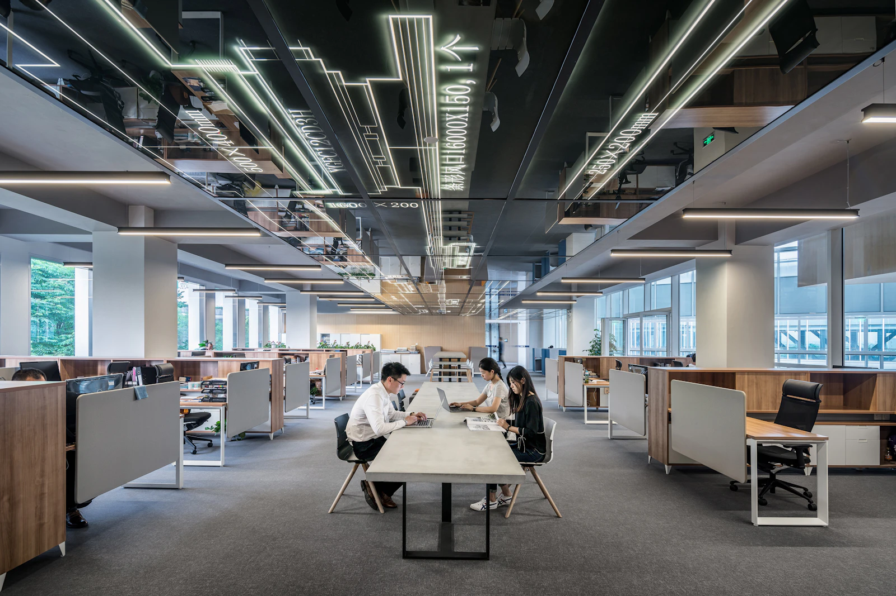
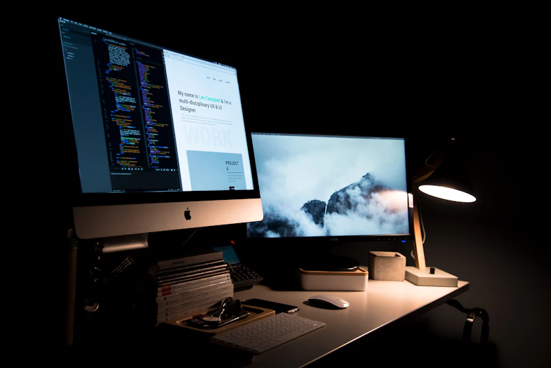
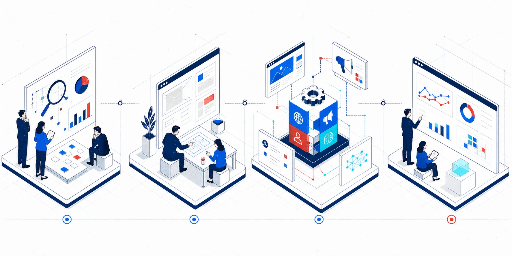

A Team Behind Your Growth
Web制作・集客・AI活用を、
実行と改善まで。
ツールや制作物だけではなく、実際に使う人と現場を見ながら、成果につながる状態まで支援します。



Our Role
施策を並べるのではなく、
人と事業が動く順番をつくる。
Web、広告、CRM、AI研修を横断し、限られた予算と体制でも実行を続けられる計画へ落とし込みます。

Services
現場の変化が見える、
5つの支援。
支援内容を、そこで働く人や実際の業務風景と一緒に紹介する写真中心のデザインです。


Why EMPLAY
つくって終わらせない、
3つの支援原則。
全体を見て考える
施策を事業の流れとして設計します。
小さく始めて改善する
優先度の高い施策から成果を確かめます。
社内に力を残す
運用方法と判断基準を共有します。

How We Work
相談から改善まで、
同じチームで進める。
課題整理、設計・提案、制作・導入、運用・改善。担当領域が変わっても、目的と優先順位を共有しながら進行します。
話すことから、
次の一手を見つけます。
初回相談は無料。まだ要件がまとまっていなくても大丈夫です。